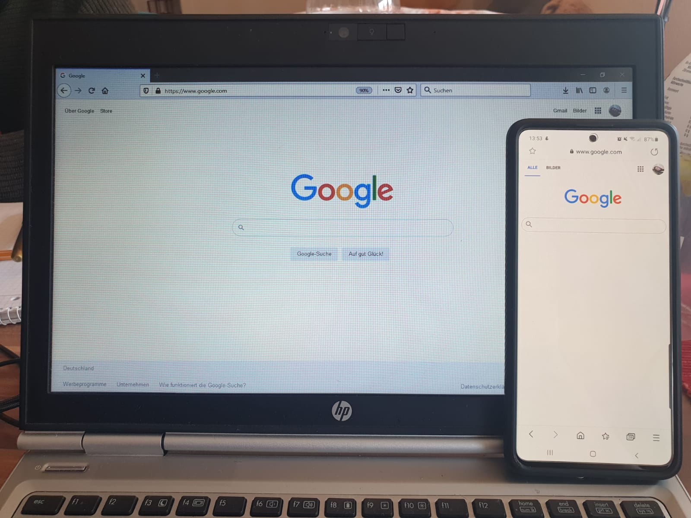
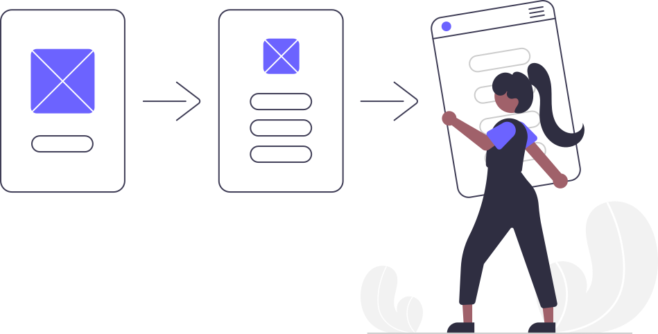
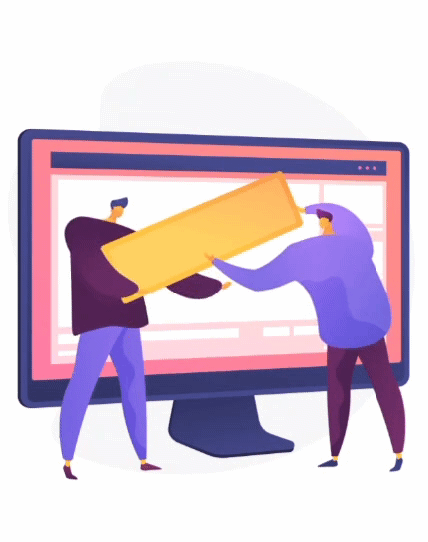

DISEÑO DE INTERACCIÓN
Principios de interacción
Clic para ver concepto ↻Las reglas y guías básicas que hacen que un sistema sea fácil, intuitivo y cómodo de usar.
Controles y acciones
Clic para ver concepto ↻Los elementos con los que interactúa el usuario (botones, menús, campos) y la respuesta directa que provocan.
Retroalimentación del sistema
Clic para ver concepto ↻La confirmación o aviso que la pantalla le da al usuario para informarle qué está pasando (mensajes, pantallas de carga).
Microinteracciones
Clic para ver concepto ↻Pequeñas animaciones o detalles visuales que acompañan una acción específica (como la vibración de un "me gusta").
Prototipos interactivos
Clic para ver concepto ↻Modelos dinámicos o simulaciones de la interfaz que permiten probar el diseño y la experiencia antes de desarrollarlo.
La frustración del usuario
"Imagina que necesitas encontrar información importante en internet. Tomas tu computadora, abres el navegador y entras a una página web que parece tener todo lo que necesitas... Después de unos segundos comienzas a preguntarte: ¿Dónde está el menú? ¿Cómo regreso a la página anterior? ¿Dónde tengo que hacer clic? ¿Por qué este botón no funciona?"
"Intentas buscar la información, pero los textos están desordenados, los botones no son claros y algunas opciones parecen estar escondidas. Haces clic en un elemento pensando que te llevará a donde necesitas, pero sucede algo completamente diferente. Después de varios intentos, comienzas a sentir frustración: la página tiene imágenes y contenido, pero utilizarla resulta demasiado complicado."
Una nueva experiencia

"Entonces decides salir y buscar otra opción. Entras a una segunda página web y la experiencia cambia por completo."
"Desde el primer momento sabes dónde comenzar. El menú está claramente identificado, los botones indican qué sucederá al seleccionarlos y la información está organizada para que la encuentres inmediatamente."
"Esta vez no tuviste que detenerte a pensar cómo utilizar la página, simplemente lo hiciste. Pero ¿qué hizo diferente a estas dos experiencias?"
¿Qué es el Diseño de Interacción?
"La respuesta se encuentra en algo que normalmente no vemos, pero que está presente en cada interacción: el Diseño de Interacción (IxD)."
"El diseño de interacción busca definir cómo las personas interactúan con un producto, sistema o servicio digital. No consiste únicamente en hacer que una página se vea atractiva, sino en conseguir que sea fácil de entender, utilizar y navegar, permitiendo que el usuario alcance sus objetivos de manera clara y eficiente."
"El diseño de interacción es invisible, pero la experiencia que crea nunca lo es: no lo ves, pero lo sientes."

En resumen, el IxD...
- ✓ Hace que la interfaz sea fácil de entender.
- ✓ Facilita la navegación en todo momento.
- ✓ Da claridad en cada acción.
-
✓ Genera retroalimentación oportuna.
Escucha un ejemplo de retroalimentación sonora:
- ✓ Considera la accesibilidad para todos los usuarios.
- ✓ Te ayuda a alcanzar tus objetivos sin frustración.
Animación de flujo

Demostración de video
La próxima vez que navegues...
"Observa, compara y descubre el diseño de interacción detrás de cada clic, cada botón y cada mensaje. Porque quizá no lo veas, pero está ahí, haciendo que todo sea más fácil. El diseño de interacción es invisible, pero la experiencia que crea nunca lo es."